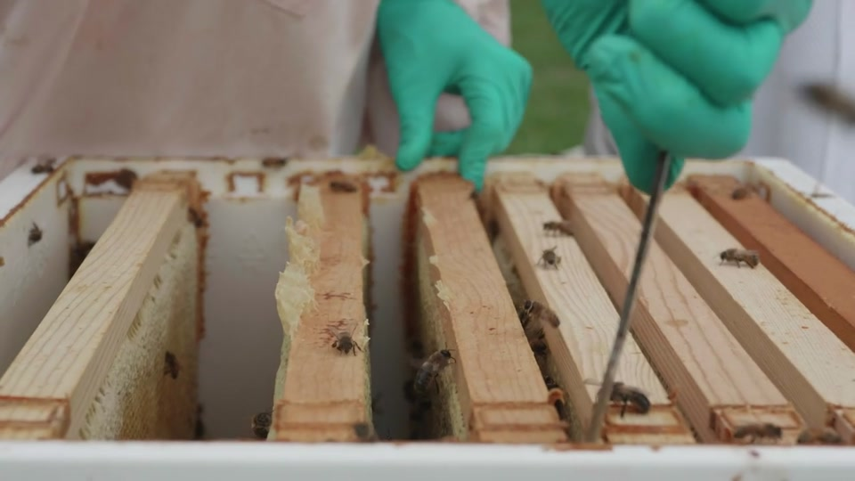

Schön, dass du da bist.
Die Welt der Bienen.
Dein neuer Anfang.
Von den ersten Grundlagen zum eigenen Gartenbienenstand. Entdecke deine drei Bücher und lerne in deinem Tempo.
Lerne dein Bienenvolk kennen
Beginne mit den Grundlagen – ganz ohne Vorwissen.
Deine Bibliothek

Die Handgriffe sehen.
Kurze Vorführungen mit echten Händen und deutschen Anleitungen – Schritt für Schritt und ohne Ton.
Wissen, das bleibt.
Lies direkt hier weiter oder lade die Original-PDFs herunter. Über die Kapitel gelangst du sofort zur passenden Stelle.
Deine Lesezeichen
Handgriffe, die du siehst.
Echte Handgriffe und deutsche Anleitungen. Passend zu deinen Büchern, Schritt für Schritt in deinem Tempo.
Die Praxisvideos werden geladen …
Gut zu wissen.
Alles zur Bibliothek, zum Lesen und zu deinen gespeicherten Inhalten.
Wie starte ich am besten?
Beginne mit „Bienenhaltung für Einsteiger“. Anschließend kannst du die Bücher zur Gartenpraxis und zur Metbereitung entdecken. In der Bibliothek kannst du auch jederzeit einzelne Kapitel direkt öffnen.
Zur BibliothekKann ich die Bücher offline lesen?
Ja. Über „PDF herunterladen“ erhältst du das jeweilige Originalbuch. Speichere es auf deinem Gerät und öffne es mit einem PDF-Programm. Der Mitgliederbereich selbst benötigt eine Internetverbindung.
Wo werden Notizen und Lesezeichen gespeichert?
Nur in diesem Browser auf diesem Gerät. Es gibt keine Synchronisation mit anderen Geräten. Wenn du Browserdaten löschst oder privat surfst, können gespeicherte Inhalte verloren gehen. Du kannst deine Notizen als Textdatei sichern.
Das Buch lädt nicht. Was kann ich tun?
Die PDFs sind zwischen 10 und 15 MB groß. Bei einer langsamen Verbindung kann das Laden einen Moment dauern. Im Lesemodus kannst du das Original-PDF auch in einem neuen Tab öffnen oder herunterladen.
Wie funktioniert die Suche?
Suche nach einem Begriff wie „Rähmchen“, „Stockkarte“ oder „Gärung“. Die Suche durchsucht alle 180 Seiten. Mit einem Klick auf einen Treffer öffnest du die entsprechende Buchseite.
Wie nutze ich die Praxisvideos?
Wähle eine Vorführung und starte die Wiedergabe. Im Modus „Schritt für Schritt“ hält das Video nach jedem Schritt an. Mit „Nächsten Schritt ansehen“ geht es weiter. Du kannst jeden Schritt wiederholen, das Tempo verringern oder das passende Buchkapitel öffnen.
Zu den PraxisvideosBildnachweise der Praxisvideos
Originalaufnahmen: Preston Keres, USDA/FPAC, 2021. Die Aufnahmen zeigen Katy Ehmann und Charlie Harris bei der Arbeit am Bienenstand. Das Ausgangsmaterial ist gemeinfrei. Für diese Bibliothek wurden Ausschnitte ausgewählt, teilweise verlangsamt, ohne Ton exportiert und mit eigenen deutschen Lernhinweisen ergänzt.
Originalaufnahmen und BildnachweisNoch eine Frage?
Wenn du Hilfe beim Zugriff auf deine Materialien brauchst, schreibe uns.
Support kontaktierentrinityag01@gmail.com